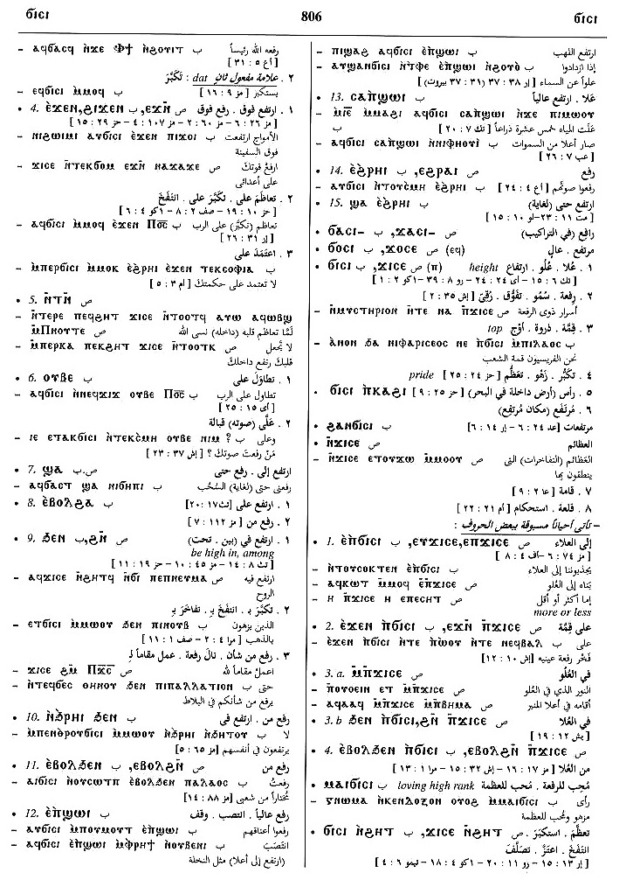

(verb)
intr: become, be high [υξουσθαι,
μεγαλυνεσθαι]
qual: [υξιστοσ, υξηλοσ, μετεωροσ]
tr: exalt [υξουν]
p.c., who raises, mounts
qual: [υξιστοσ, υξηλοσ, μετεωροσ]
tr: exalt [υξουν]
p.c., who raises, mounts
(S, A, sA)
ϫⲓⲥⲉ
(B) ϭⲓⲥⲓ
(F) ϫⲓⲥⲓ
(S, sA) ϫⲉⲥⲧ-
(S) ϫⲁⲥⲧ-
(B) ϭⲉⲥ-, ϭⲁⲥ-
(S) ϫⲁⲥⲧ=, ϫⲓⲥⲧ=
(A, sA, F) ϫⲉⲥⲧ=
(B) ϭⲁⲥ=
(S) ϫⲟⲥⲉ+
(A, sA) ϫⲁⲥⲉ+
(sA, F) ϫⲁⲥⲓ+
(B) ϭⲟⲥⲓ+
(S, A, sA, F) p c ϫⲁⲥⲓ-
(B) p c ϭⲁⲥⲓ-
(B) ϭⲓⲥⲓ
(F) ϫⲓⲥⲓ
(S, sA) ϫⲉⲥⲧ-
(S) ϫⲁⲥⲧ-
(B) ϭⲉⲥ-, ϭⲁⲥ-
(S) ϫⲁⲥⲧ=, ϫⲓⲥⲧ=
(A, sA, F) ϫⲉⲥⲧ=
(B) ϭⲁⲥ=
(S) ϫⲟⲥⲉ+
(A, sA) ϫⲁⲥⲉ+
(sA, F) ϫⲁⲥⲓ+
(B) ϭⲟⲥⲓ+
(S, A, sA, F) p c ϫⲁⲥⲓ-
(B) p c ϭⲁⲥⲓ-
| With following preposition:5375 | Crum: 789a | ||||||||
| (S, A, sA, B, F) ― ⲉ- | over, above5376 | ||||||||
| (S, A, sA, B) ― ⲉϫⲛ- | over, upon5377 | ||||||||
| (S, A, B) ― ⲛ- | dat
as for as in5378 |
||||||||
| (S) ― ⲛⲧⲛ- | with, for5379 | Crum: 789b | |||||||
| (B) ― ⲛⲁϩⲣⲉⲛ- | beside, before5380 | ||||||||
| (B) ― ⲟⲩⲃⲉ- | toward5381 | ||||||||
| (S, B) ― ϣⲁ- | up to5382 | ||||||||
| (B) ― ⲉⲃⲟⲗ ϩⲁ- | from off5383 | ||||||||
| (S, A, sA, B, F) ― ϩⲛ-, ― ϧⲉⲛ- | in, among5384 | ||||||||
| (S, B) ― ϩⲓϫⲛ- | upon5385 | ||||||||
| With following adverb:5386 | |||||||||
| (B) ― ⲉⲡϣⲱⲓ | upward5387 | ||||||||
| (S, sA, B, F) ― ⲉϩⲣⲁⲓ, ― ⲉϩⲣⲏⲓ, ― ⲁϩⲣⲏⲓ | up5388 | ||||||||
| (S, A, sA, B, F) ― (ⲡ) | (noun male)
height, top [υξοσ, υξωμα, υπεροχη, επαρσισ]3914 |
Crum: 790a | |||||||
| (S, sA, B, F) ϫⲓⲥⲉ ⲛϩⲏⲧ, ϭ. ⲛϩⲏⲧ | be high hearted, vain
[φυσιυσθαι, τυφουσθαι]
nn m [φυσιωσισ]3915 |
||||||||
| (S) ϫⲟⲥⲉ (ⲡ/ⲧ) | (noun male/female)
exalted person, place3916 |
||||||||
See also:
Opposite:
| view | (B) ϭⲟⲓⲥ (S, Sf) ϫⲟⲓⲥ, ϫⲟⲉⲓⲥ (S, A, F) ϫⲥ (A, sA, F) ϫⲁⲉⲓⲥ (sA, F) ϫⲁⲓⲥ (Sf) ϭⲟⲥ (NH) ϫⲉⲥ (S) ϫⲓⲥⲟⲟⲩ, ϫⲓⲥⲟⲟⲩⲉ (A, sA) ϫⲓⲥⲉⲩⲉ (B) ϭⲓⲥⲉⲩ (F) ϫⲓⲥⲏⲟⲩⲓ (Sf) ϫⲓⲥⲏⲏⲩⲉ | (noun male/female) lord
― title of God [κυριοσ] ― of man, master, owner [οικοδεσποτησ] ― of saint17 |
| view | (S) ϩⲓⲃⲉ (B) ϩⲉⲃⲓ | (verb) intr: be low, short [ταπεινουσθαι]2122 |
Crum: 788,789,790

788

789

790
Dawoud: 805b-807a,
750b

805

806

807

750